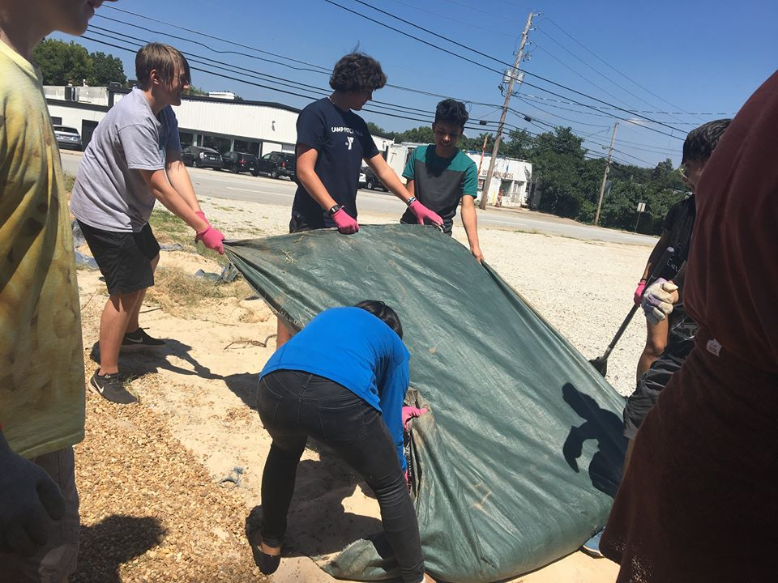
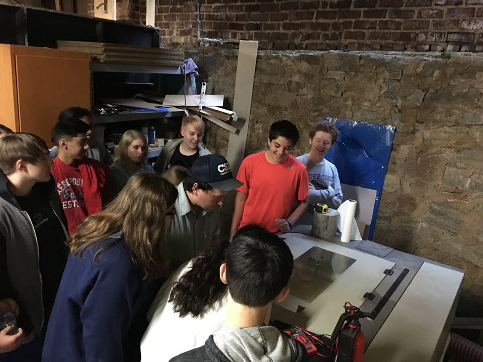
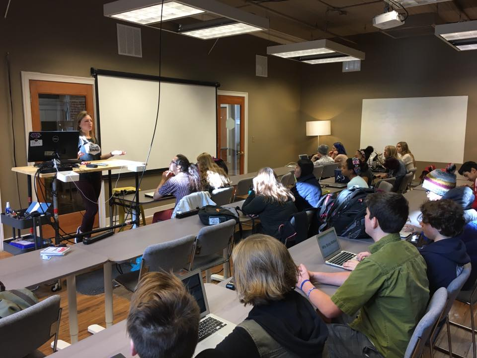

First Item
One of my first projects this sophomore year involved preparing for the new TNS food garden. Our main task was to create a community garden where not only would we be able to grow our own food but for it to act as a place of relaxation for students. One of the main motives for the project was the question, where does our food come from? Throughout the project from viewing to preparing our gardens we were thinking about the work that goes in to prepare the food we take for granted everyday.

Second Item
Another project that I Worked on my freshman year has learning how to create a basic simple website from scratch. We spent a couple months working on learning the skills on creating a working website to then display them by creating our own website describing a serious issue during a hackathon.

Thrid Item
One of my last projects during my freshman year involved designing and creating a tiny house/mailbox. We went through the process of sketching both by hand and online. To then creating prototypes by both cardboard and foam core. We finally ended up creating a final mailbox and tiny trailer out of wood.
